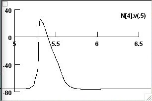
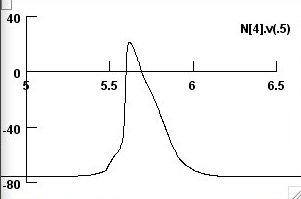
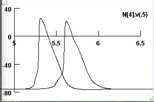

A Model of Tight Junction Function In CNS Myelinated Axons The two models included can be implemented in NEURON v5.9 or v6.2: 1) a myelinated axon is represented by an equivalent circuit with a double cable design but includes a tight junction in parallel with the myelin membrane RC circuit (called double cable model, DCM). 2) a myelinated axon is represented by an equivalent circuit with a double cable design but includes a tight junction in series with the myelin RC circuit (called tight junction model, TJM). These models have been used to simulate data from compound action potentials measured in mouse optic nerve from Claudin 11-null mice: Devaux, J.J. & Gow, A. (2008) Tight Junctions Potentiate The Insulative Properties Of Small CNS Myelinated Axons. J Cell Biol 183, 909-921. ModelDB accession number: 122442 A detailed description of the models has been submitted to Neuron Glia Biology. Both models were designed using CellBuilder andChannelBuilder and are set up to simulate a small axon of 0.6um diameter with 3 wraps of membrane in each of 20 myelin sheaths. Each .ses file includes the active properties of the model: Nav, Kf, Ks channels and leak. Ion concentrations (specified in Distributed Mechanisms -> Managers -> Homogenous spec) are: Na out = 160 mM Na in = 30 mM K out = 5 mM K in = 140 mM Specifying axons of different sizes An excel spreadsheet is included to enable calculation of the passive properties for DCM and TJM axons of different diameters. Active properties remain constant. Default values of the parameters that were used for publication are included in the spreadsheet 1) specify the axon diameter, Di (bright yellow), optional parameters (pale yellow), tight junction and myelin resistivities (olive). Reduce tight junction resistivity by 10-fold to simulate an axon lacking tight junctions 2) insert the calculated values (pink) into NEURON in the Geometry page of CellBuilder 3) insert the calculated values (bright blue) into NEURON in the Biophysics page (extracellular parameters) 4) insert event times from the PointProcessManagers in NEURON into the spreadsheet (gray) to calculate CV Contact for assistance: agow@med.wayne.edu Reproducing fig. 6d or 6e requires running each model a couple of times using different extracellular resistances. these resistances are calculated using the spreadsheet. As a starting point, I have attached 3 screenshots (in the screenshots folder) for the TJM to generate the solid (screenshot 1)  the dashed (screenshot 2)  and both APs (screenshot 3)  in fig 6d. we can then modify this as necessary (see the screenshots folder in the archive for parameter settings).